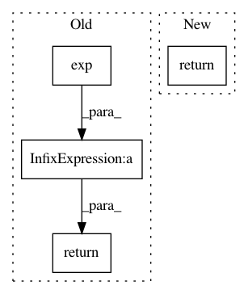

f0d9867d09be9aad4d42aba9d2ec5a9a020037f7,keras/layers/advanced_activations.py,ELU,call,#ELU#Any#Any#,109
Before Change
def call(self, x, mask=None):
pos = K.relu(x)
neg = (x - abs(x)) * 0.5
return pos + self.alpha * (K.exp(neg) - 1.)
def get_config(self):
config = {"alpha": float(self.alpha)}
base_config = super(ELU, self).get_config()
After Change
super(ELU, self).__init__(**kwargs)
def call(self, x, mask=None):
return K.elu(x, self.alpha)
def get_config(self):
config = {"alpha": float(self.alpha)}
base_config = super(ELU, self).get_config()
In pattern: SUPERPATTERN
Frequency: 3
Non-data size: 4
Instances
Project Name: keras-team/keras
Commit Name: f0d9867d09be9aad4d42aba9d2ec5a9a020037f7
Time: 2016-09-22
Author: kilotaras@gmail.com
File Name: keras/layers/advanced_activations.py
Class Name: ELU
Method Name: call
Project Name: GPflow/GPflow
Commit Name: 456b9ed099cc5f7e99880371ac9d1924095769f3
Time: 2017-05-26
Author: joachim.vanderherten@ugent.be
File Name: GPflow/transforms.py
Class Name: Log1pe
Method Name: backward
Project Name: keras-team/keras
Commit Name: 01d5e7bc4782daafcfa99e035c1bdbe13a985145
Time: 2016-07-16
Author: francois.chollet@gmail.com
File Name: examples/lstm_text_generation.py
Class Name:
Method Name: sample